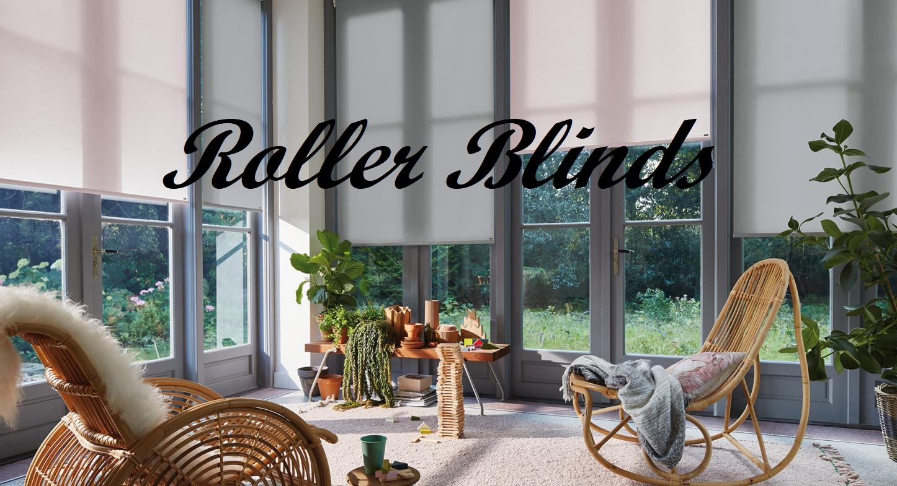

<div id="fondo">
<nav class="navbar navbar-expand-sm bg-dark navbar-dark"
		>
		<a class='fas fa-house-user' style='font-size:30px;  color: #25ABE1' ></a>
		<ul class="navbar-nav">
      <li  class="nav-item"><a (click)="touch()" [routerLink]="['listar']" class="nav-link" >activos</a></li>
      <li class="nav-item"><a (click)="touch2()" [routerLink]="['finalizado']" class="nav-link" >finalizados</a></li>
		</ul>
  </nav>
   
  <router-outlet></router-outlet>
</div>
